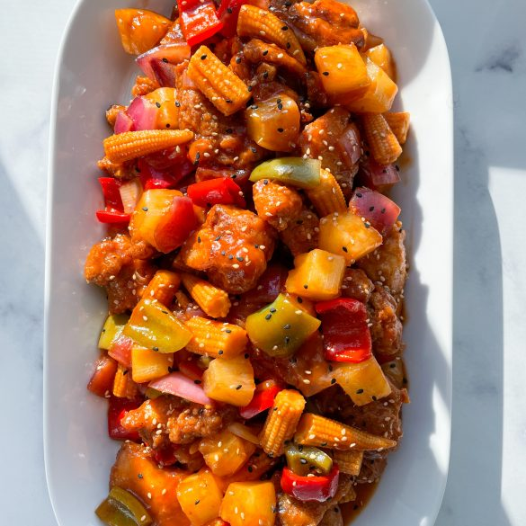

Home
Sweet and Sour Chicken

Description
Make restaurant-worthy sweet and sour chicken from scratch in the comfort of your own home with this top-rated
recipe.
Ingredients
- 1 3/4 cups of water, divided
- 1 can of pineapple chunks
- 3/4 cup white sugar
- 1/2 cup distilled white vinegar
- 2 drops orange food color
- 1/4 cup cornstarch
- 2 1/4 cups self-raising flour
- 2 tablespoons vegetable oil
- 2 tablespoons cornstarch
- 1 large egg
- 1/2 teaspoon salt
- 1 1/2 cups water
- 8 skinless, boneless chicken breast halves
- 1 quart vegetable oil
- 2 green bell pepper
Steps
- Combine 1 ½ cups of water, reserved pineapple juice, sugar, vinegar, and orange food coloring in a medium
saucepan. Bring to a boil over medium heat; set aside.
- Mix 1/4 cup cornstarch and 1/4 cup water together in a small bowl until smooth; pour into the sauce, stirring
continuously, until slightly thickened.
- Place flour, 2 tablespoons oil, 2 tablespoons cornstarch, egg, salt, and white pepper in a large bowl; gradually
whisk in 1 1/2 cups water to make a thick batter.
- Add chicken pieces; stir until well coated.
- Heat oil in a large, deep skillet or wok to 360 degrees F (180 degrees C). Fry chicken pieces in preheated oil
until golden, about 10 minutes; remove and drain on paper towels.
- Layer green peppers, pineapple chunks, and cooked chicken pieces on a platter; pour hot sweet and sour sauce
over top.
- Serve hot and enjoy!